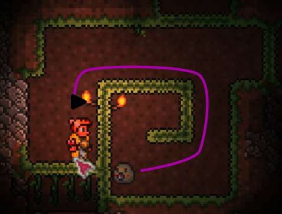

Smart Minion Pathfinding
Your minions now intelligently navigate around terrain. When blocked by obstacles, they find paths around them instead of getting stuck. When truly isolated, they phase back to you to prevent cheese strategies.
